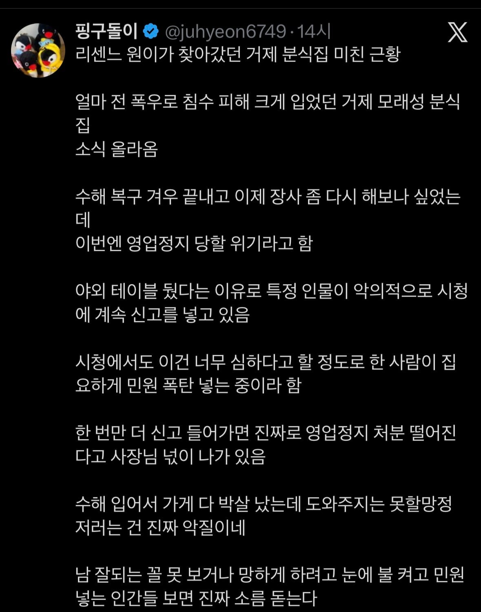
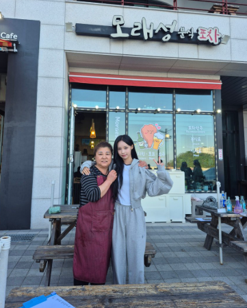

ㅠㅠ
허가를 받으시던가 불법이먼 철거를 하셔야;;:
악의적 ㅇㅈㄹ ㅡㅋㅋ
이 기회에 허가 받고 하는 게 뒤탈도 없을 듯
ㅋㅋㅋ
방송 타는건 양날의 검이야
며칠전에 갔는데 이제 저기에서 못먹게함
그랬더니 못먹게한다고 지랄하는 손님도 생김ㅋㅋ
그나저나 맛 별로라는 평있던데
생각보다 ㄱㅊ았음 먹을만함
맛이 별로 일순있겠지 유명한 프차도아니고 맛집으로 소문난게아니고 그냥 동네 포차였는데 원이때메 뜬거니깐 진짜맛집이였으면 지역내에서 이미 소문이자자했을꺼같음
ㅋㅋㅋㅋ원래 유명해지면 그럼
이게 유튜브 탑승의 양날의 검임
불특정 다수에게 나를 노출시킨다는게 진짜 리스크가 크긴 함
진짜 안유명하고 돈 많은게 최고야
권혁빈이었는데 이제 유명해져버림 ㅋㅋ
불법이면 어쩔수없지...
불법은 쉴드가 힘듬
뭔 쌉소리지 법이 뭔지 몰라?
쓰읍...불법이면 리마인도 쉴드를 못해줘요..
별 지랄을 ㅋㅋㅋ
그래도 법은 지켜야....
모든 가게가 인도에 테이블두고 장사한다고
생각해봐라. 물론 나는 대부분의 사람들처럼 무신경하긴하지.
옥외영업신고라는게 있습니다. 법은 준수해야죠
지킬건 지키라는 뜻이었는데
어떻게 읽은거노?
인도에 테이블 두고 장사하는거 자체가 불법이 아니라고 이새끼야ㅋㅋㅋ
그렇기에 "모든 가게가 인도에 테이블두고 장사한다고"라는 말 자체가 문제가 있는 조건임.
태이블 치우면 되잖아 뭔
되도않는 걸로 당하나했더니 그건 아니네
인도 아니면 허가받고 설치하면 될건데
난또 뭐라고~
유명세 타면 은근슬쩍 하던 편법은 못쓰는거지
저게 근데 허가가 나나? 어닝 밑도 안되고 건축물 아래만 된다고 알고 있는데
대충 댓글들 보니까 절차가 복잡해보이지도 않고 저쪽은 거의 신고에 가까운 허가제인가 본데 거제는 물난리 나서 상권쪽도 난장판일건데 시에서 선제적으로 조치할 방법이 없나?
미안한데... 테이블만 치우면 문제 없는거잖아...??????
원래 없던 거 사람들 존나 몰려서 개지랄하니까 편의상 임시로 둔 거라며 애초에
불법을 계속 신고하면 악질인?
불법을 계속 유지하는게 악질아닌가